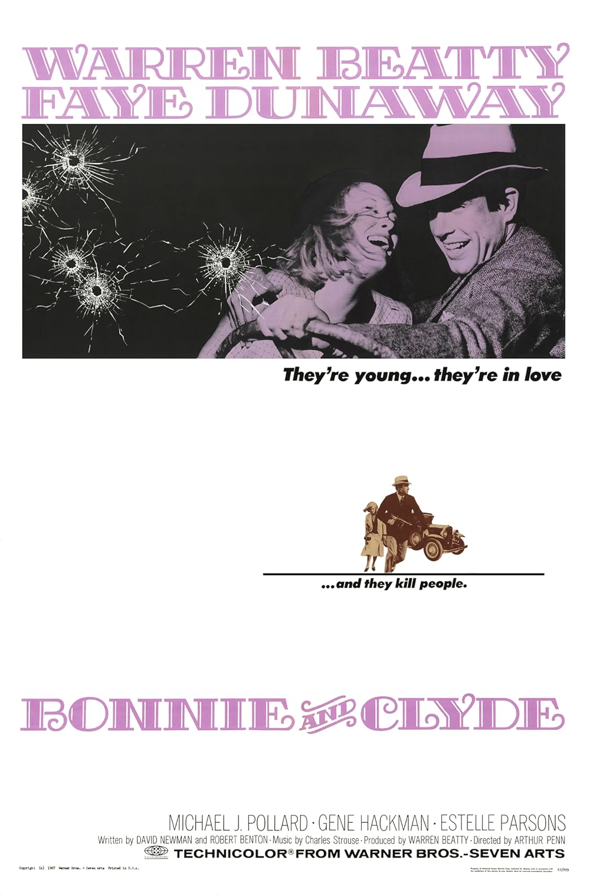

Bonnie and Clyde
40th Academy Awards
(Oscars 1968)
10 Nominations, 2 Awards
| Nominations | ||
|---|---|---|
| Category | Nominees | Result |
| Best Picture | Warren Beatty | Nominated |
| Actor | Warren Beatty | Nominated |
| Actress | Faye Dunaway | Nominated |
| Actor in a Supporting Role | Gene Hackman | Nominated |
| Actor in a Supporting Role | Michael J. Pollard | Nominated |
| Actress in a Supporting Role | Estelle Parsons | Won |
| Directing | Arthur Penn | Nominated |
| Writing (Story and Screenplay--written directly for the screen) | David Newman and Robert Benton | Nominated |
| Cinematography | Burnett Guffey | Won |
| Costume Design | Theadora Van Runkle | Nominated |